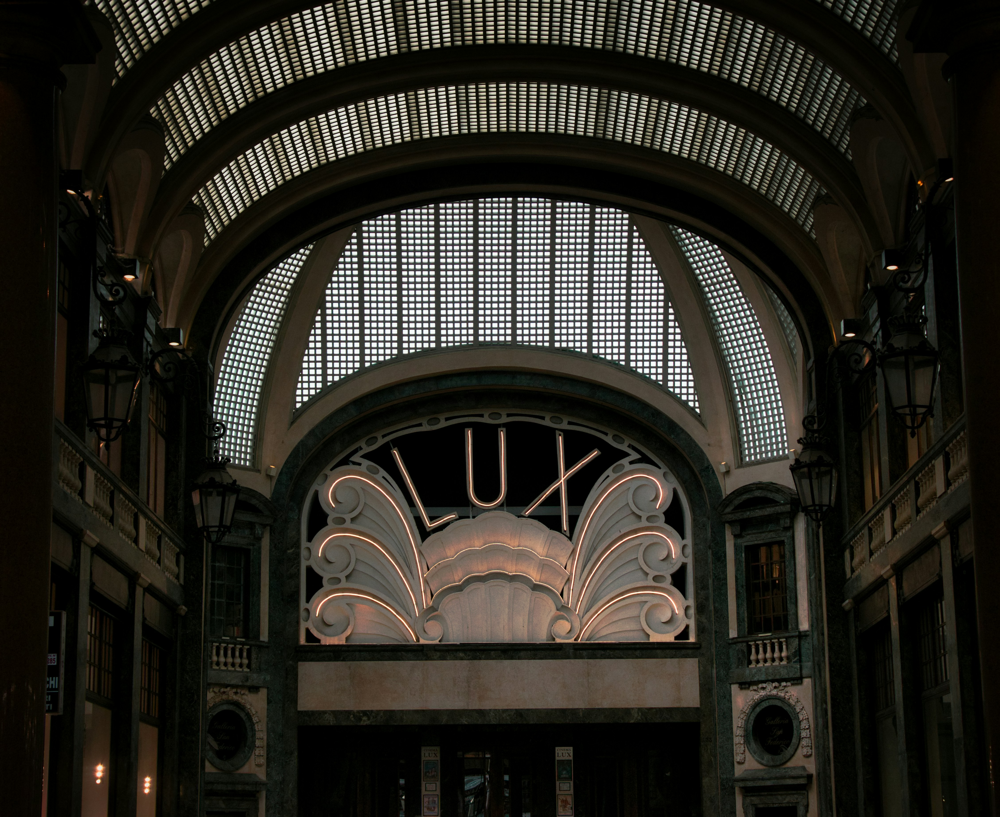

Un Viaggio nel Tempo: La Storia di Torino
Fondata come castrum romano col nome di Julia Augusta Taurinorum, Torino conserva ancora oggi l'ordinata pianta a scacchiera dell'epoca. La svolta arrivò nel 1563 con il trasferimento della capitale del Ducato di Savoia, trasformandola in una raffinata ed elegante capitale barocca ricca di palazzi e piazze monumentali.
Nell'Ottocento fu il centro del Risorgimento e nel 1861 divenne la prima Capitale del Regno d'Italia. Successivamente la città si è reinventata, affermandosi prima come capitale del cinema e dell'innovazione scientifica, e poi come grande polo industriale. Oggi Torino è una metropoli dinamica che unisce architettura regale, cultura e innovazione.
4 curiosità su Torino
- Prima città in Italia con illuminazione a gas (1837)
- Capitale del cinema italiano prima di Roma (Museo del Cinema, primi studi cinematografici d'Italia)
- Città dei portici: oltre 18 km coperti, tra le reti di portici più lunghe d'Europa
- Sede della prima Esposizione Universale italiana (1911)

🏛️ Arte e Storia
Dalla Reggia di Venaria ai Musei Reali, Torino custodisce uno dei patrimoni artistici più ricchi d'Italia, erede della sua storia di capitale sabauda.
Scopri di più🧭 Un giorno a Torino
Un percorso pensato per scoprire il meglio della città, tappa dopo tappa, senza perdere tempo.
Scopri di più🔍 Prima di partire
Tutto quello che ti serve sapere: contatti, consigli pratici e come prenotare la tua visita.
Scopri di piùPerchè visitare Torino?
Torino è una città che si vive lentamente, seduti ai tavolini dei suoi caffè storici — Al Bicerin, Baratti & Milano — dove il rito dell'aperitivo e della pausa caffè fanno parte della cultura cittadina da secoli. Camminare sotto i suoi portici, oltre 18 km che collegano piazze e vie del centro, significa scoprire la città in ogni stagione, riparati dalla pioggia d'autunno o dal sole d'estate.
È una città elegante ma mai distante: l'imponenza dei palazzi sabaudi e delle piazze monumentali convive con la vivacità di una popolazione giovane, universitaria e creativa, che anima quartieri come San Salvario e Vanchiglia con locali, murales e nuove idee.
Torino sa anche sorprendere con il suo lato più misterioso: la leggenda vuole che la città formi, insieme a Lione e Praga, un "triangolo magico" esoterico d'Europa — un motivo in più per esplorarla con occhi curiosi, tra storia, arte e atmosfera.